2 sets of LLMs
your public > blog
your private > Notion
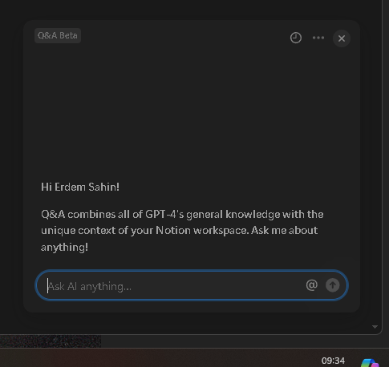
Notion AI makes more sense than chatgpt from open ai as it is trained on my data
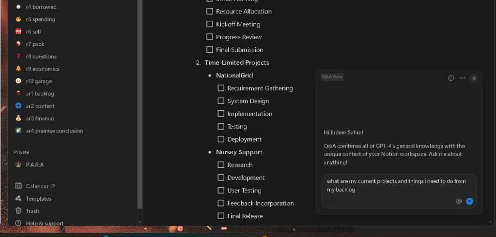
4o is interesting and it would make sense
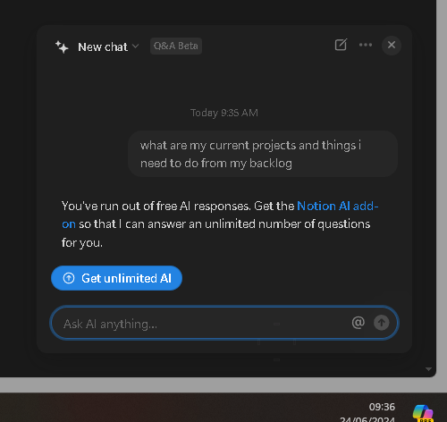
QA turn it into a knowledge base!
now moving to the notion AI and it should be also the similar workflow as well
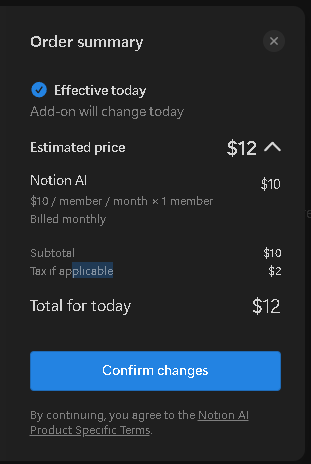
Lets try per month and learn to get work based on it.
at least it works
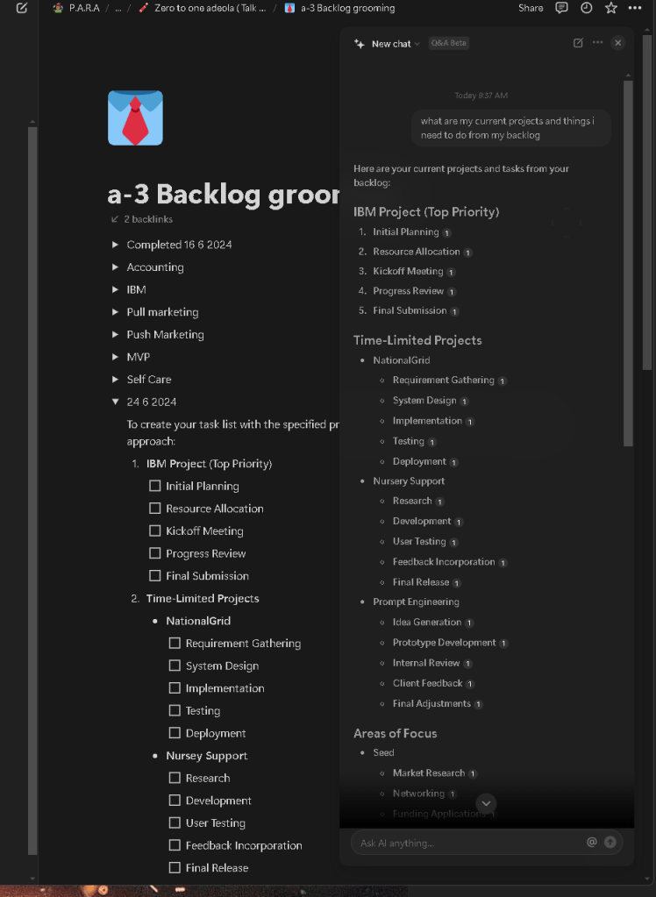
reading my own content
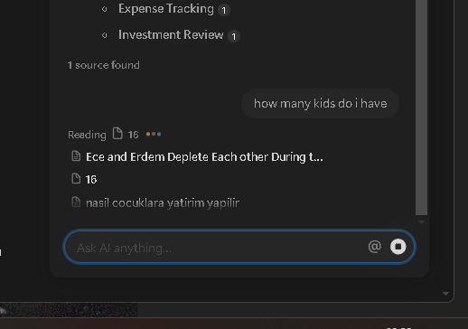
not bad fixing the response
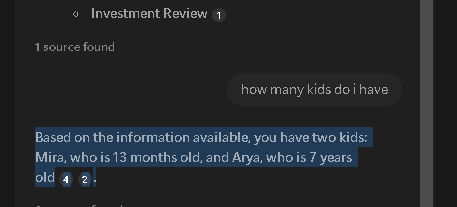
Also references are there
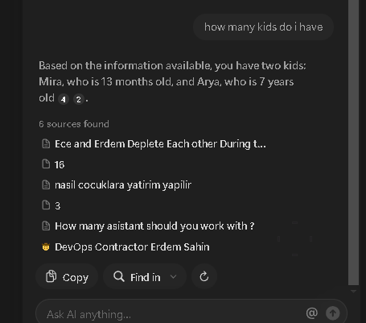
So the notion and the wordpress integration has to happen and the action is there to place the public ones into wordpress and private ones to notion!
Moving in notion makes more sense for speedy action
bottom monitor divided into 4
1> download
2> wordpress
3> notion in the center > catagory there
4>Emails go over >>> push the todos into notion
the courses are getting taken]
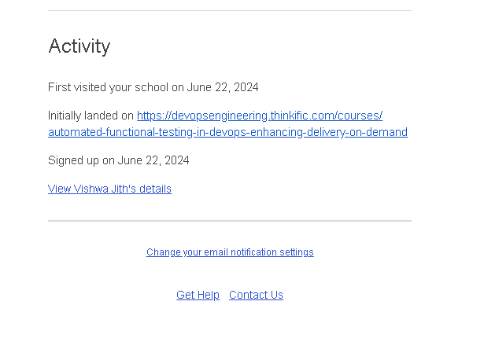
Notion is the faster and easier system for internals
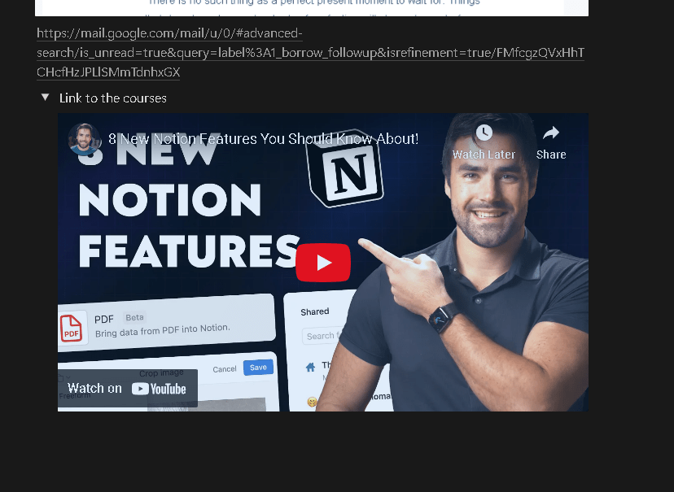
What i need to help > Nana does help the community
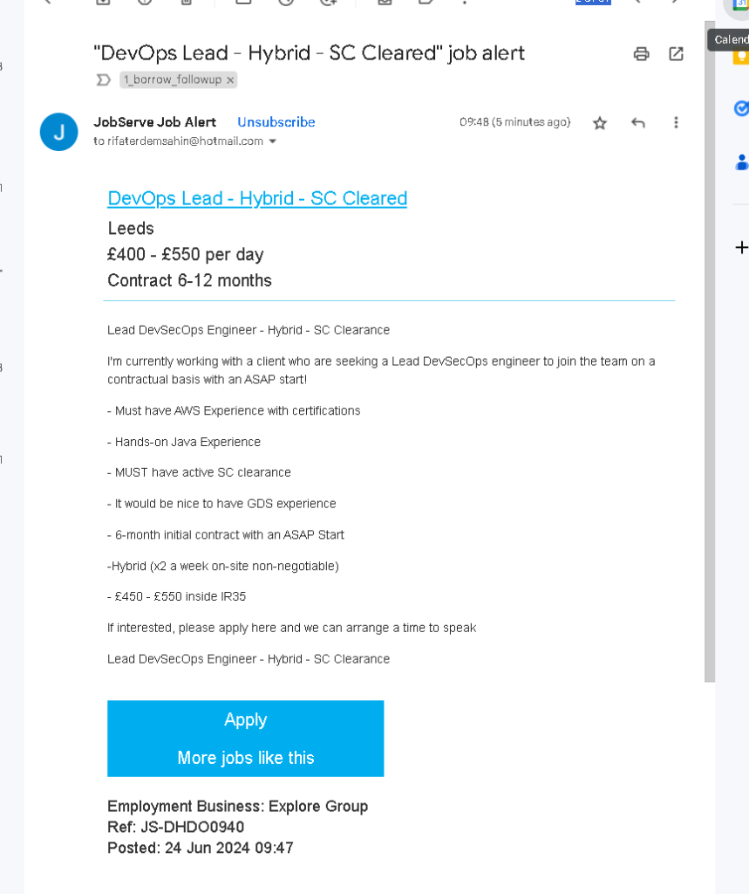
many tools to communicate
wix > websites > product
blog > wordpress > writings
notion > journal ( maybe the blog should be the journal only )
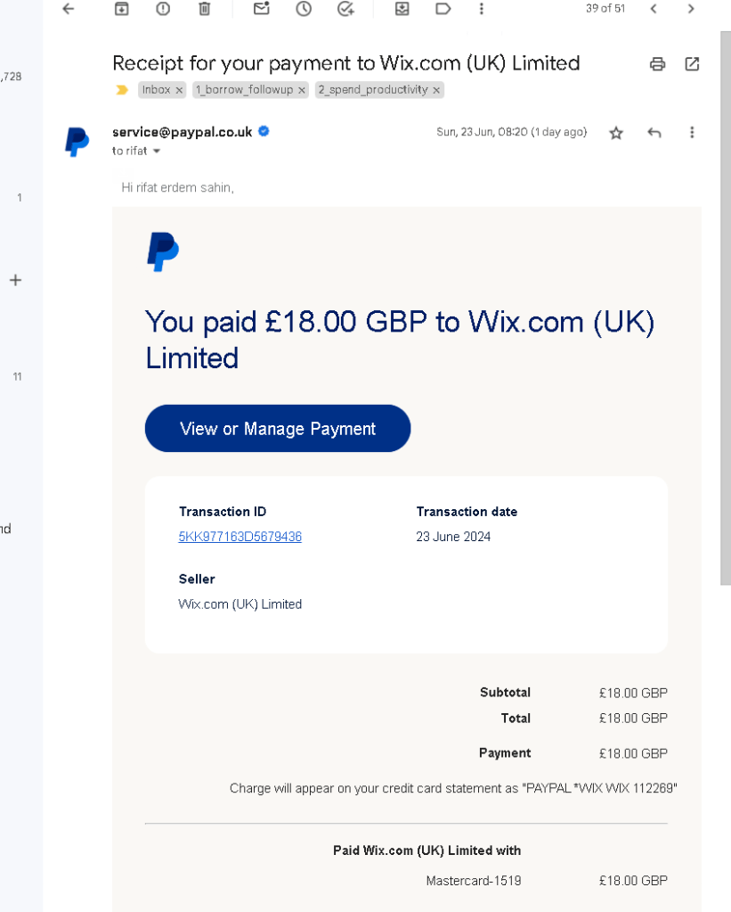
working on taxes this is the gpt one > only a screenshot
The document provided is a Trading Profit and Loss Account for Pexabo Ltd for the years ended 29 February 2024 and 2023. Here's a breakdown of the key financial figures and the rationale behind the higher tax payment in 2024:
Key Financial Figures
-
Turnover (Sales)
-
2024: £165,885
-
2023: £150,193
-
Profit Before Taxation
-
2024: £89,417
-
2023: £51,262
-
Tax on Profit
-
2024: £21,317
-
2023: £10,092
-
Net Profit
-
2024: £68,100
-
2023: £41,170
Analysis and Rationale
-
Increase in Turnover:
-
The company experienced an increase in sales from £150,193 in 2023 to £165,885 in 2024. This increased revenue contributed to a higher profit before taxation.
-
Staff Costs:
-
Although wages and salaries decreased from £17,219 in 2023 to £15,172 in 2024, and directors' salaries decreased slightly from £15,600 to £14,300, the overall staff costs have an impact on the profitability.
-
Depreciation:
-
Depreciation remained relatively stable, with a slight increase from £7,581 in 2023 to £7,582 in 2024. There was also a profit on the disposal of tangible fixed assets of £292 in 2024.
-
Other Charges:
-
Significant reductions in rent and repairs and maintenance costs in 2024 compared to 2023 contributed to reduced expenses. Rent decreased from £18,312 to £12,986, and repairs and maintenance from £8,357 to £3,715.
-
Other general administration costs and interest payable saw some fluctuations, contributing to the changes in overall expenses.
-
Profit Before Taxation:
-
The company’s profit before taxation increased significantly from £51,262 in 2023 to £89,417 in 2024.
Higher Tax Payment in 2024
The primary reason for the higher tax payment in 2024 is the substantial increase in the company's profit before taxation. The profit before taxation nearly doubled from £51,262 in 2023 to £89,417 in 2024. Since corporation tax is calculated as a percentage of the profit before taxation, a higher profit results in a higher tax charge.
In summary, the higher taxes in 2024 are a direct result of the increased profitability of the company during that year. The increased turnover and effective management of certain expenses led to higher taxable profits, thus resulting in a higher tax charge.
NOTION#
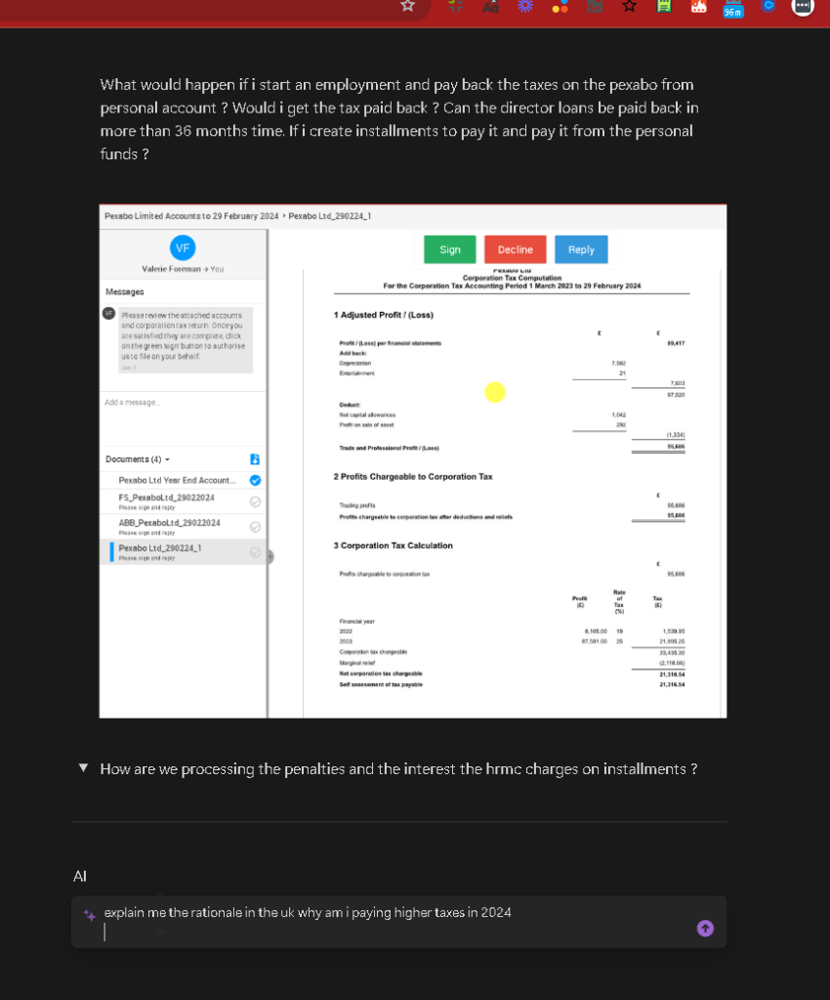
notion not being able to take it from the picture is a down side
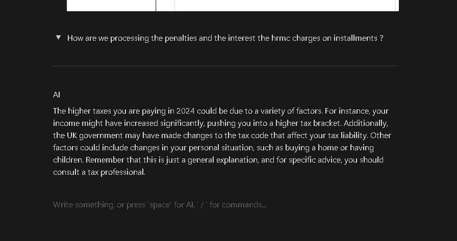
you can send the context by writing it to her e> openai one feels bigger with better formatting
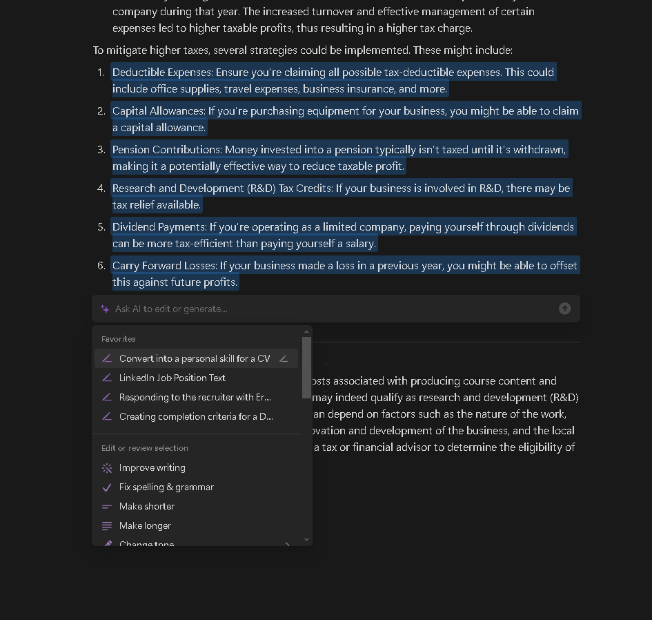
easier question to ask on the ai
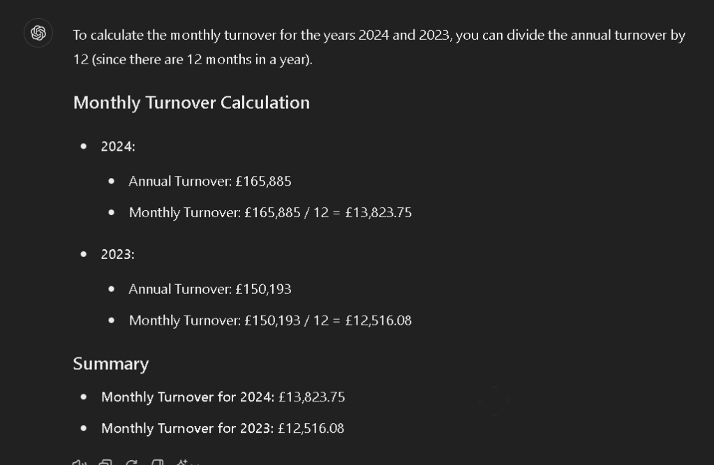
turn to table also works in the notion AI as well
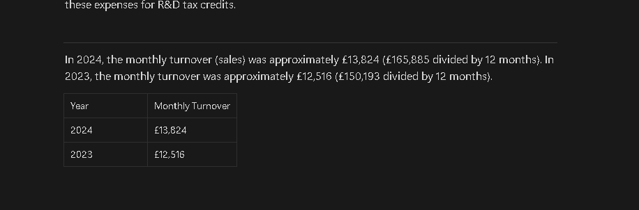
it is looking at my data to find it for the notion
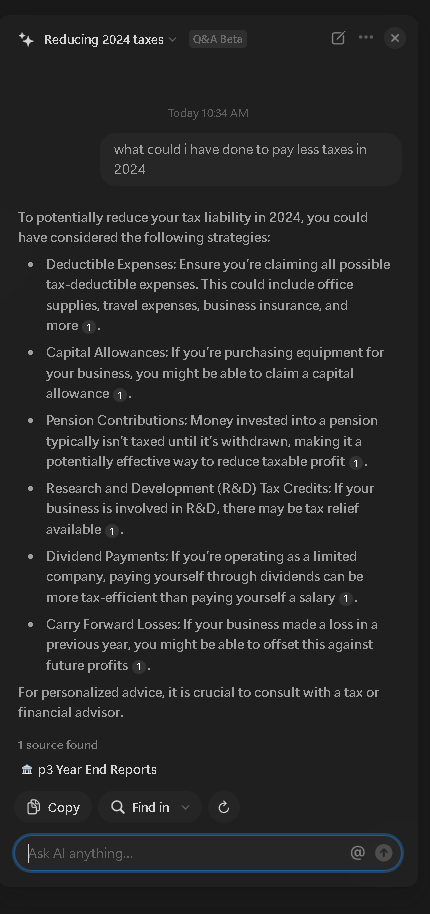
STILL HUMAN CONFIRMATION AND COMMUNITY NEEDED!
CREATE FUNNEL AND GET FEEDBACK AND ALWAYS TALK TO THE CUSTOMER!
Imported from rifaterdemsahin.com · 2024